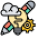
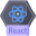

Minha caixinha de ferramentas
Essas são as minhas habilidades e ferramentas que domino que me permitem criar soluções
criativas e funcionais para a resolução de problemas.
-
Desenvolvimento Web
Habilidade em Desenvolvimento Front End com foco em tecnologias modernas.
-

Web Design
Habilidade em criar layouts modernos e responsivos, com foco na experiência do usuário.
-
UX | UI Design
Conhecimentos em design de interfaces visualmente atraentes e intuitivas através do Figma.
-
HTML
Conhecimentos em HTML para o desenvolvimento de projetos.
-
CSS
Conhecimentos em CSS para a construção de estilos dos projetos.
-
JavaScript
Conhecimentos em JavaScript para o desenvolvimento de projetos interativos e dinânimos.
-

React
Conhecimentos em React para o desenvolvimento de projetos mais modernos.
-
Python
Habilidade em Python para a construção de projetos ligados a lógica computacional.